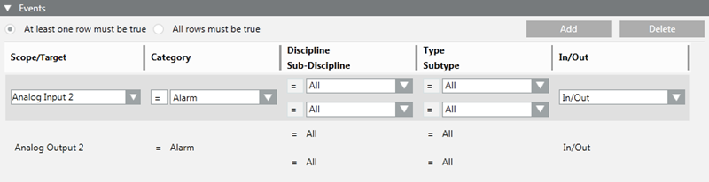

Events Conditions
The Events expander is available when you configure one of the following automated functions: automated handling of an alarm, an operating procedure, an operating procedure step, journaling, or a reaction.
It lets you specify the necessary conditions related to alarms/events for triggering or filtering the function you configure based on the types of alarms that occur in the Desigo CC station.

- Each condition occupies one row.
- In some cases, a radio button lets you specify whether all the conditions (AND logic between rows) or only one (OR logic between rows) must be true to assert the Events trigger/filter. If this radio button is absent, there is always an OR logic between the rows (at least one row must be true to assert the trigger/filter)
- To add a new event condition (row), do one of the following:
- Click Add. This creates a new row with an empty Scope/Target field and the rest of the fields set to All.
- Drag-and-drop (link) one or multiple scope nodes or object nodes from System Browser to the empty area underneath the last-configured row: This creates a new row with the Scope/Target field automatically set based on the linked objects.
NOTE: You can drag-and-drop a multiple selection from System Browser provided all the selected objects belong to the same type (such as the same object model; for example, they are all Binary Input). - To remove a row, select it and click Delete.
- Within each row, you can define what criteria an event must match to make that condition true. All the criteria you specify on a row must be met for that condition to be true (AND logic between columns):
- Scope/Target
- Category, Discipline/Sub-Discipline, and Type/Subtype
- In/Out
These criteria are described in detail below.
Scope/Target
The Scope/Target field specifies the target objects affected by the event. The row will be true for events affecting the specified scope/target objects that also match any other criteria specified in the row.
- To set or change the Scope/Target field of a row, drag-and drop (link) one or multiple scope nodes or object nodes from System Browser. A popup menu displays where you can select one of the following:
- Add new elements: The linked objects are added to the Scope/Target field. If the Scope/Target field was already populated, the new objects will be added to the existing ones.
- Replace Existing Filter: The linked objects will replace the existing ones in the Scope/Target field.
- Add New Filter: Creates a new row with the linked objects added to the Scope/Target field of the new row, and all the other fields set to All.
- Cancel Operation: Does nothing.
- If the Scope/Target field contains multiple objects, you can:
- Click the drop-down list to view them.
- Click the x next to an object to remove it.
- You can also use the search box to filter the objects in the drop-down list. Note that the search box does not accept wildcards.
- You can clear a Scope/Target field by right-clicking it and selecting Set Scope to All in the popup menu.
Category, Discipline/Subdiscipline, and Type/Subtype
You can use the equals (=) or not equals (≠) operators to filter by:
- The Category of the event (for example, Emergency or Fault).
- The Discipline/Subdiscipline of the event.
- The Type/Subtype of the event.
The row will be true for events affecting the specified scope/target objects that also match any further criteria (category, discipline/sub-discipline, type/sub-type, in/out) specified here.
In/Out

The In/Out setting is available only if prescribed by regulations.
In means the start of an event (the event source enters the off-normal state).
Out means the end of an event (the event source is back to normal).
When this setting is available, you can filter the events based on their In/Out value as follows:
- In: only events where the source goes into the off-normal state, so that IN events display in Event List.
- Out: only events where the source is back to normal, so that OUT events display in Event List.
- In/Out: both In and Out events, so that IN and OUT events display in Event List, IN before OUT, active before inactive.